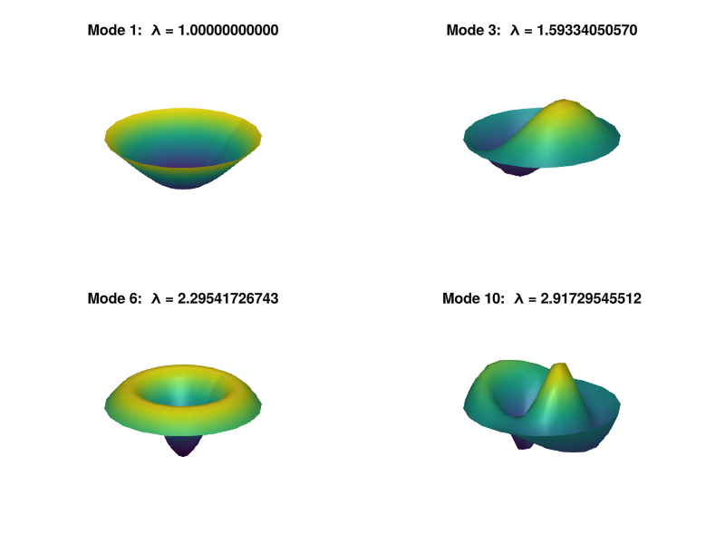

Polar coordinates
Contents
Polar coordinates#
include("smij-functions.jl");
p28: eigenmodes of Laplacian on the disk (compare p22.jl)#
# r coordinate, ranging from -1 to 1 (N must be odd):
N = 25
N2 = div(N - 1, 2)
D, r = cheb(N)
D² = D^2
D1 = D²[2:N2+1, 2:N2+1]
D² = D²[2:N2+1, N:-1:N2+2]
E1 = D[2:N2+1, 2:N2+1]
E2 = D[2:N2+1, N:-1:N2+2]
# t = theta coordinate, ranging from 0 to 2π (M must be even):
M = 20
dθ = 2π / M
θ = dθ * (1:M)
M2 = M ÷ 2
entry(k) = k==0 ? -π^2 / 3dθ^2 - 1 / 6 : 0.5 * (-1)^(k+1) / sin(dθ * k/ 2)^2
D²t = [ entry(mod(i-j,M)) for i in 1:M, j in 1:M ]
# Laplacian in polar coordinates:
R = diagm(1 ./ r[2:N2+1])
Z = zeros(M2, M2)
L = kron(D1 + R * E1, I(M)) + kron(D² + R * E2, [Z I(M2); I(M2) Z]) + kron(R^2, D²t)
# Compute four eigenmodes:
index = [1, 3, 6, 10]
λ, V = eigen(-L, sortby=abs)
λ = λ[index]
V = V[:, index]
λ = sqrt.(real(λ / λ[1]))
4-element Vector{Float64}:
1.0
1.5933405056950356
2.2954172674276077
2.9172954551170522
# Plot eigenmodes with nodal lines underneath:
using GLMakie, PyFormattedStrings
rr, θθ = r[1:N2+1], [0; θ]
XX = [r*cos(θ) for θ in θθ, r in rr]
YY = [r*sin(θ) for θ in θθ, r in rr]
z = cis.(π * (-200:200) / 200)
fig = Figure()
ax = vec([ Axis3(fig[j,i]) for i in 1:2, j in 1:2 ])
for i in 1:4
u = reshape(real(V[:, i]), M, N2)
u = [zeros(M + 1) u[[M; 1:M], :]]
u = normalize(u, Inf)
surface!(ax[i], XX, YY, u)
ax[i].title = f"Mode {index[i]}: λ = {λ[i]:.11f}"
limits!(ax[i],-1.05, 1.05,-1.05, 1.05,-1.05, 1.05)
end
hidespines!.(ax)
hidedecorations!.(ax)
fig

p28b: eigenmodes of Laplacian on the disk#
function p28b() # r coordinate, ranging from -1 to 1 (N must be odd) N = 25 N2 = Int((N - 1) / 2) (D, r) = cheb(N) D² = D^2 D1 = D²[2:N2+1, 2:N2+1] D² = D²[2:N2+1, N:-1:N2+2] E1 = D[2:N2+1, 2:N2+1] E2 = D[2:N2+1, N:-1:N2+2]
# t = theta coordinate, ranging from 0 to 2*pi (M must be even):
M = 20
dθ = 2 * pi / M
t = dθ * (1:M)
M2 = Int(M / 2)
D²t = toeplitz([-pi^2 / (3 * dθ^2) - 1 / 6; @. 0.5 * (-1)^(2:M) / sin(dθ * (1:M-1) / 2)^2])
# Laplacian in polar coordinates:
R = diagm(1 ./ r[2:N2+1])
Z = zeros(M2, M2)
L = kron(D1 + R * E1, I(M)) + kron(D² + R * E2, [Z I(M2); I(M2) Z]) + kron(R^2, D²t)
# Compute 25 eigenmodes:
index = 1:25
λ, V = eigen(-L)
ii = sortperm(abs.(λ))[index]
λ = λ[ii]
V = V[:, ii]
λ = sqrt.(real(λ / λ[1]))
# Plot nodal lines:
(rr, tt) = (r[1:N2+1], [0; t])
(xx, yy) = @. (cos(tt) * rr', sin(tt) * rr')
z = exp.(1im * pi * (-100:100) / 100)
clf()
for i = 1:25
subplot(5, 5, i)
u = reshape(real(V[:, i]), M, N2)
u = [zeros(M + 1) u[[M; 1:M], :]]
u = u / norm(u[:], Inf)
plot(real(z), imag(z))
xlim(-1.07, 1.07)
ylim(-1.07, 1.07)
axis("off")
axis("equal")
contour(xx, yy, u, levels=[0])
title("$(round(λ[i],sigdigits=5))", fontsize=8)
end
end
p29: solve Poisson equation on the unit disk#
function p29() # Laplacian in polar coordinates: N = 25 N2 = Int((N - 1) / 2) (D, r) = cheb(N) D² = D^2 D1 = D²[2:N2+1, 2:N2+1] D² = D²[2:N2+1, N:-1:N2+2] E1 = D[2:N2+1, 2:N2+1] E2 = D[2:N2+1, N:-1:N2+2] M = 20 dθ = 2 * pi / M t = dθ * (1:M) M2 = Int(M / 2) D²t = toeplitz([-pi^2 / (3 * dθ^2) - 1 / 6; @. 0.5 * (-1)^(2:M) / sin(dθ * (1:M-1) / 2)^2]) R = diagm(1 ./ r[2:N2+1]) Z = zeros(M2, M2) L = kron(D1 + R * E1, I(M)) + kron(D² + R * E2, [Z I(M2); I(M2) Z]) + kron(R^2, D²t)
# Right-hand side and solution for u:
(rr, tt) = (r[2:N2+1]', t)
f = @. -rr^2 * sin(tt / 2)^4 + sin(6 * tt) * cos(tt / 2)^2
u = L \ f[:]
# Reshape results onto 2D grid and plot them:
u = reshape(u, M, N2)
u = [zeros(M + 1) u[[M; 1:M], :]]
(rr, tt) = (r[1:N2+1], t[[M; 1:M]])
(xx, yy) = @. (cos(tt) * rr', sin(tt) * rr')
clf()
surf(xx, yy, u)
view(20, 40)
xlim(-1, 1)
ylim(-1, 1)
zlim(-0.01, 0.05)
xlabel("x")
ylabel("y")
zlabel("z")
end